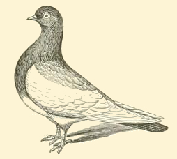
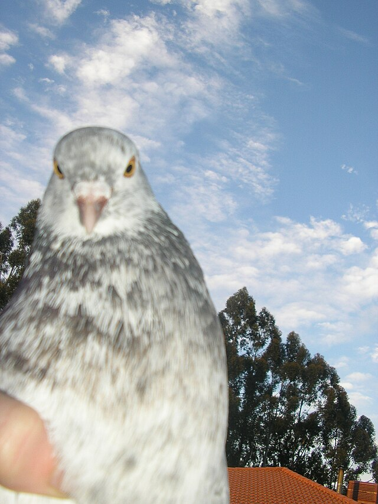

Our Mission
Today The Villads Society is engaged in many facets of society from pigeon racing to pigeon breeding. What started as a humble group of members has turned into a continent spanning society. Our mission is to further the keeping of pigeons. We believe that these animals will play an important part in our future. We need their help as much as they need ours. Therefore, are we today engaged in building the pigeon society of tomorrow.

A statement from the Chairman of the board

"I'm doing my part - The pressure is on you." - Dr. Brünnhilde
Quotes of the day
Song of Songs 7:4 NIV: Your nose is like the tower of Lebanon looking toward Damascus.
Galatians 5:12 HCSB: I wish those who are disturbing you might also get themselves castrated!
Matthew 21:18 NIV: Early in the morning, as Jesus was on his way back to the city, he was hungry. Seeing a fig tree by the road, he went up to it but found nothing on it except leaves. Then he said to it, “May you never bear fruit again!” Immediately the tree withered.